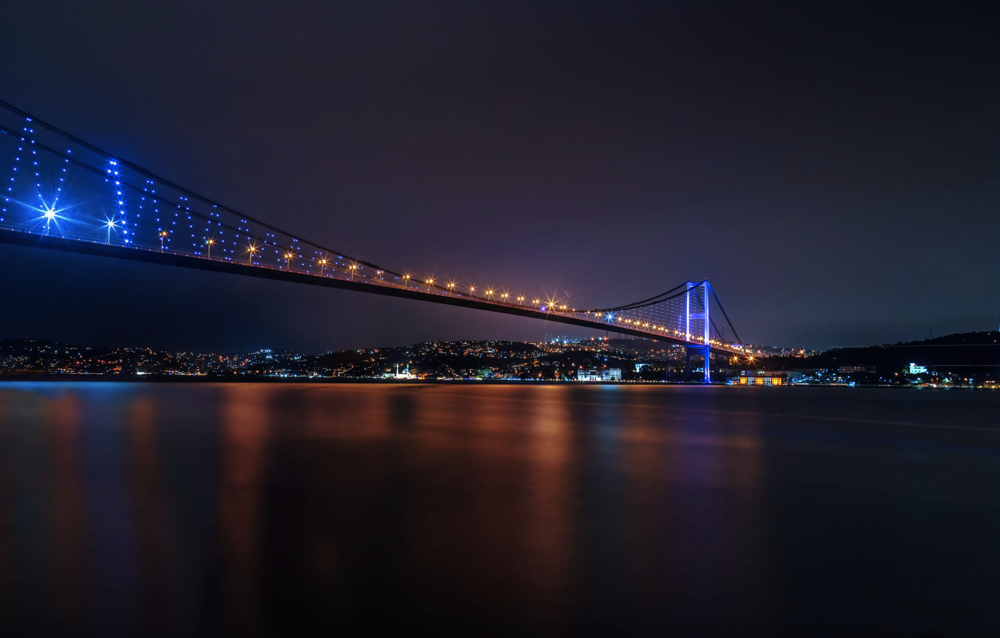
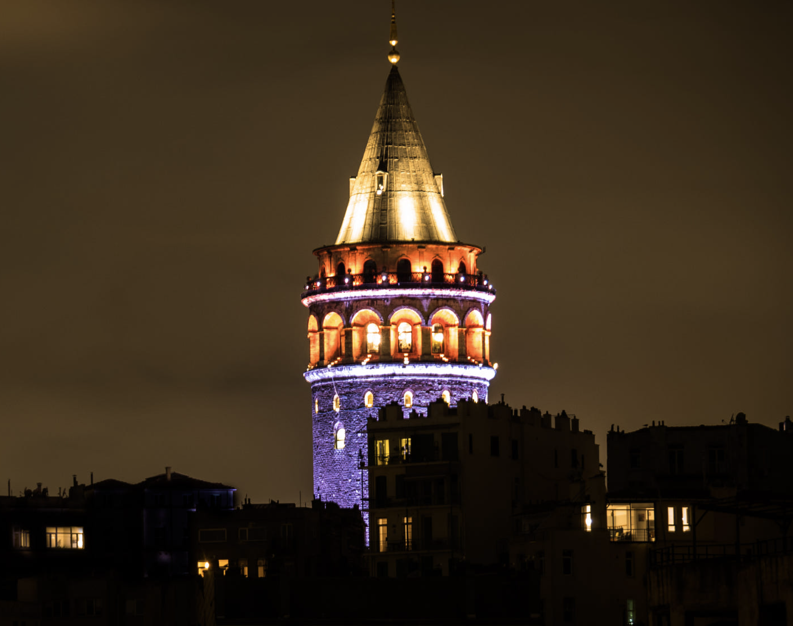
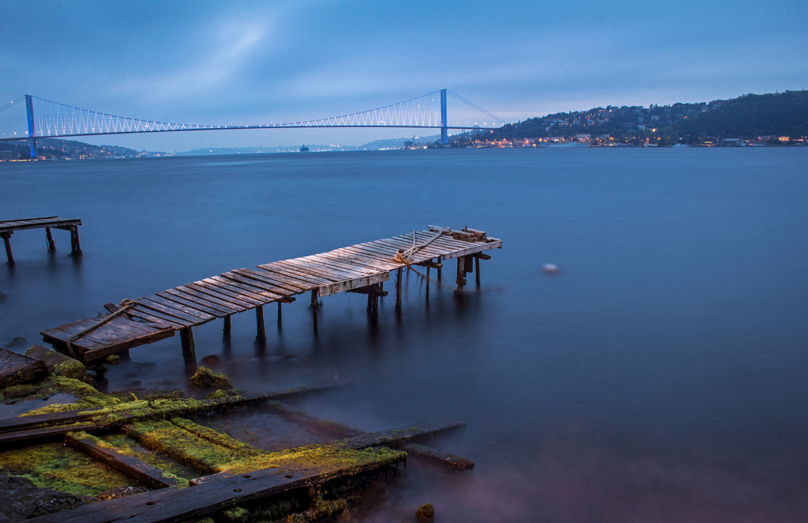
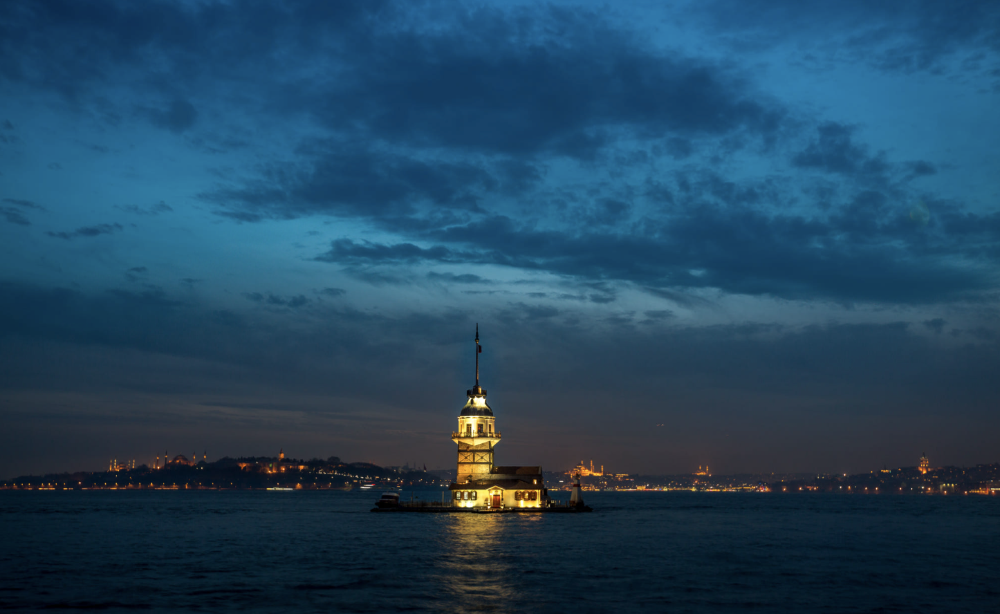
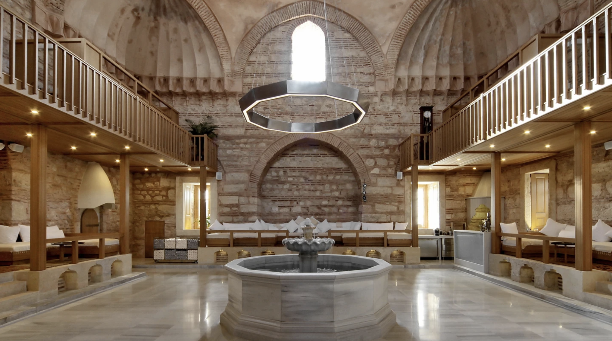

10 MUST-HAVE EXPERIENCES IN ISTANBUL, TURKEY
1 / 6

2 / 6

3 / 6

4 / 6

5 / 6

6 / 6

Istanbul is one of the world’s great cities. There are so many wonderful reasons why you should visit this city. Istanbul is old, dating back thousands of years, and with that, there are many historical places to visit. Istanbul is gorgeous, with its assortment of mosques and their colorful tile work and dramatic architecture. Istanbul is charming; we met so many welcoming, friendly people here. And finally, Istanbul is home to the Hagia Sophia, an amazing architectural feat and one of the Wonders of the World.
If you have plans to visit Istanbul, you should know that there is a lot to see here. You can easily fill five days of your time in Istanbul. Hopefully, you have at least three days on your itinerary, but more time is ideal.
Either way, if you are like us, you will be dreaming about returning to Istanbul someday. It’s just that kind of city…it stays in your heart long after you leave.
If you only have time for one thing in Istanbul, it should be the Hagia Sophia. This cathedral was constructed in 537 AD. For 900 years it was the seat of the Orthodox Patriarch of Constantinople. The Hagia Sophia was the single greatest architectural achievement of the Byzantine Empire. In 1453, when the Ottomans took over Constantinople, the Hagia Sophia was turned into a mosque. It functioned as a museum until July 2020. Now, it is a mosque.

The Topkapi Palace was the administrative center of the Ottoman Empire. This Palace was used for 400 years until Dolmabahce Palace was constructed in the mid 1800’s. One of the best places to visit in Topkapi Palace is the Harem, where the mother of the sultan, his wives, and his concubines lived. Topkapi Palace is a beautiful spot in Istanbul. Room after room is covered in exquisite tile work. If you are here in the springtime, the gardens are filled with tulips and hyacinths. Plus, the views of Istanbul from here are amazing.

This city square is the heart of the modern section of Istanbul. Many hotels and restaurants can be found here, and it is also the gathering place for locals to celebrate New Year's Eve.

The Basilica Cistern is the largest of several hundred ancient cisterns beneath the city that provided a water filtration system for the buildings nearby. This underground chamber measures approximately 138 meters (453 ft) by 64.6 meters (212 ft) and is capable of holding 80,000 cubic meters (2,800,000 cu ft) of water. The ceiling is supported by 336 marble columns.

Built in 500 A.D., Galata Tower is one of the dominating landmarks of Istanbul. It was used as a watchtower to help defend the city. There is a restaurant and café on its upper floors which have views of Istanbul and the Bosphorus. Also located on the upper floors is a nightclub which hosts a Turkish show. There are two operating elevators that carry visitors from the lower level to the upper levels. Galata Tower was included in World Heritage temporary list in Turkey by UNESCO in 2013.
The Bosporus or Bosphorus, also known as the Strait of Istanbul, is a narrow, natural strait and an internationally significant waterway located in northwestern Turkey. It forms part of the continental boundary between Europe and Asia, and divides Turkey by separating Anatolia from Thrace. It is the world's narrowest strait used for international navigation. The Bosporus connects the Black Sea with the Sea of Marmara, and, by extension via the Dardanelles, the Aegean and Mediterranean seas, and by the Kerch Strait, the sea of Azov.
The Maiden’s Tower served many different purposes throughout the centuries, including a merchantman tax collection center, a defense tower, and a lighthouse. During the 1830 cholera epidemic, it was transformed into a quarantine hospital and radio station. In 1964, the building was given over to the Ministry of Defence and then to the Maritime Enterprises 18 years later. Following a number of renovations, nowadays the tower is a visitor attraction, with a ground-floor restaurant offering traditional Turkish dishes alongside excellent views. There’s also a museum with free admission.
Istanbul’s painstakingly restored Ottoman hammams, many designed by the great Mimar Sinan, tell the stories of the historical figures who commissioned them, including sultans and powerful members of their harem and court. Visit these bathhouses for a scrub and a massage to join the long tradition of keyif (relaxing) in a serene environment.
For the best, cheap experience in Istanbul, take the commuter ferry from Eminonu across the Bosphorus River to Kadikoy. This round trip excursion takes about an hour and when we did it, it cost just $1 per person. If you don’t have time to do the full day Bosphorus River Cruise, this journey on the commuter ferry is the perfect alternative. Mix in with the locals and enjoy the views back to the the Blue Mosque and the Hagia Sophia. If you are traveling with kids, bring some bread to feed the seagulls that follow the ferry. This is a great activity to do at sunset because the views back to the Sultanahmet District are amazing.

Sitting along the Bosphorus near the Kabatas tram stop and the Besiktas ferry port, Dolmabahçe Palace's jaw-dropping beauty and historical importance impresses visitors. Built in the 19th century, the palace was used by the final Ottoman sultans as their primary residence and administrative seat. The interior and exterior architecture showcase a mix of European and Arab designs that can only be found at this global crossroad.